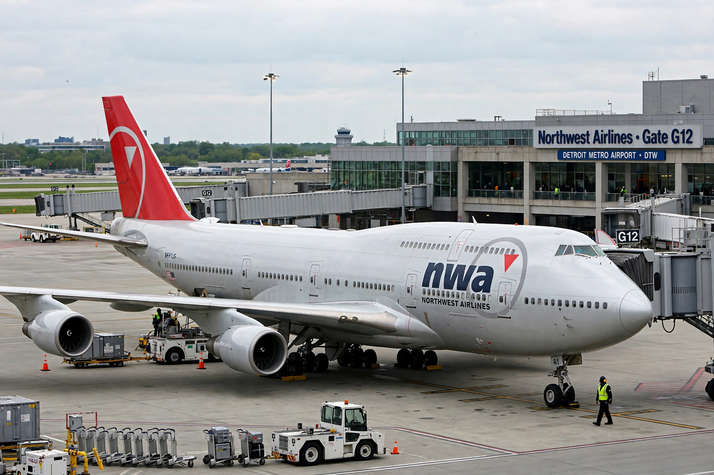

| Northwest Airlines | |
|---|---|
| IATA | NW |
| ICAO | NWA |
| Call sign | NORTHWEST |
| Founded | September 1, 1926 (as Northwest Airways) |
| Ceased operations | January 31, 2010 (merged into Delta Air Lines) |
| Hubs | Detroit, Memphis, Minneapolis/St. Paul, Amsterdam, Tokyo-Narita |
| Alliance | SkyTeam (2004–2010) |
| Headquarters | Eagan, Minnesota, United States |
Northwest Airlines (often abbreviated to NWA) was a major United States airline founded in 1926. It was the fifth-largest airline in the world by scheduled passenger-kilometers flown at the time of its merger. In 2008 Northwest agreed to merge with Delta Air Lines; the merger was approved in October 2008, and Northwest's operations were fully integrated into Delta by January 31, 2010, ending the Northwest brand after more than 83 years.
Northwest Airways was founded on September 1, 1926, by Colonel Lewis Brittin, and began flying mail between Chicago and the Twin Cities. In 1927 it carried its first passengers. The airline adopted the name Northwest Airlines in 1934 and expanded across the northern United States. In 1947 it inaugurated service to Asia via the great-circle route over Alaska, becoming the first airline to operate scheduled transpacific service using that routing, and promoted itself as "Northwest Orient."
During the postwar decades Northwest built a Pacific network anchored at Tokyo, serving cities across Japan, China, Korea, and Southeast Asia. At home it developed major hubs at Minneapolis–Saint Paul, Detroit, and Memphis. The airline pioneered several practices, including early adoption of the Boeing 747 and, in 1989, the long-range 747-400, for which it was the launch customer.
After emerging from Chapter 11 bankruptcy protection in 2007, Northwest announced on April 14, 2008, that it would merge with Delta Air Lines to create the world's largest airline. The deal received regulatory approval in October 2008. The two carriers operated separately until the FAA granted a single operating certificate on December 31, 2009, and the Northwest brand was retired on January 31, 2010.
At the time of the merger, Northwest operated a mixed fleet of Airbus A319, A320, and A330 aircraft, Boeing 747-400 and 757 aircraft, and McDonnell Douglas DC-9s, some of which were among the oldest passenger jets still in scheduled service.
See also: Delta Air Lines, SkyTeam, Boeing 747.